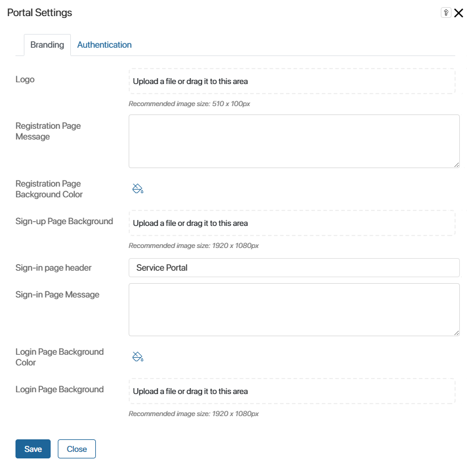
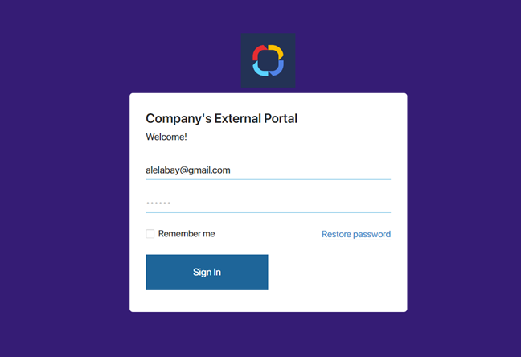
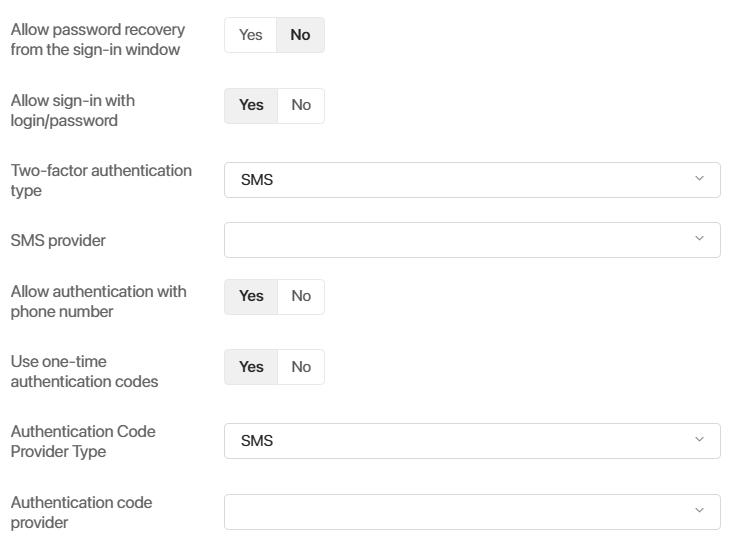
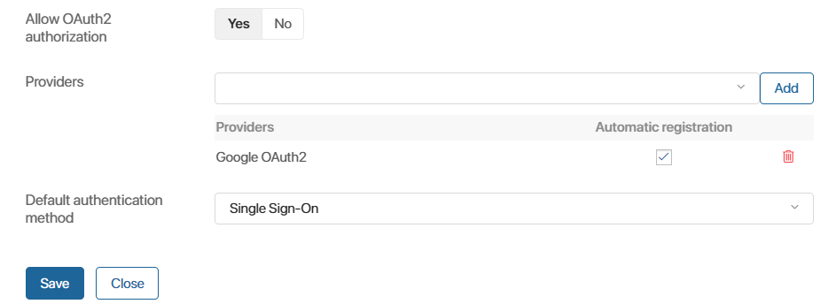

To change the design of the registration and sign-in pages, go to the BRIX workspace with the external portal enabled. Then go to the portal page and click on the gear icon next to the word Portal. This will open a settings window with two tabs: Branding and Authentication.
Начало внимание
Only users included in the Administrators group can change the design and sign-in settings of the portal.
Конец внимание
Branding tab
On the Branding tab, you can customize the individual design of the registration and sign-in pages on the portal.

You can:
- Upload the company logo that will be shown on both pages.
- Add a message to be shown in the data entry form on the pages.
- Edit the header on the sign-in page.
- Set a background color for the pages.
- Set a background image.
Below you can see an example of a customized sign-in page. It has a logo added to it, the background color, the company’s portal header, and the Welcome! message.

Authentication tab
On this tab, you can:
- Enable password recovery.
- Limit the ways of signing in to the portal.
- Configure two-factor authentication.
- Allow signing in by phone number.
- Connect a module for signing in to the portal via an external service.
Set up sign-in options and two-factor authentication

- Allow password recovery from the sign-in window. Enable the option to display the Restore password link in the sign-in window. Users will be able to enter the email or phone number specified during registration, click on the link, and change their current password by following the instructions sent. Please note, the Forbid password recovery option in the password policy settings are not applied to portal sign-in.
- Allow sign-in with login/password. Using this option, you can limit the ways users can sign in on the portal. For example, if authentication is performed via an external service, sign-in with login and password can be disabled for better security.
- Two-factor authentication type. In addition to password authentication, you can use two-factor authentication for external users. This will increase the security of the account. Select the two-factor authentication type:
- SMS. To sign in, the external user will need to enter an individual code from SMS in addition to the login and password. The code is sent to the number specified in the external user page in the Phone field.
- SMS provider. Select the provider to send a SMS with the authentication code.If the provider is not in the list, make sure that the integration module is enabled and configured for it.
- Email.To sign in the external user should enter not only login and password, but also individual code from the email. It is sent to the email specified in the Email field on the external user page.
Important: in BRIX On-Premises the authentication code is sent via the SMTP server specified during system installation. - Custom module. You can enable the method for internal users with access to BRIX workspaces and external portal, if the two-factor authentication module is configured in the company. When logging in, the employee enters a login and password, then a confirmation code sent via a third-party service, for example, in a chat with a Telegram bot. Please note that if this method is enabled, external users will enter only with the login and password.
- Module. Select a custom module for two-factor authentication. If the module is not in the list, make sure it is configured and enabled.
- SMS. To sign in, the external user will need to enter an individual code from SMS in addition to the login and password. The code is sent to the number specified in the external user page in the Phone field.
- Allow authentication with phone number. Users can use their phone number when registering on the portal via an individual invitation link, as well as for authorization and password recovery. They do not need to additionally enter their email address. For more details on how to register and log in, read the Sign in to the portal article.
Configure the settings for sending one-time codes via SMS:
- Use one-time authentication code. Enable the option to allow external users to sign in on the portal using a one-time verification code without entering login and password.
- One-time code provider. Currently, only SMS type is available for selection.
- One-time code provider. Select the configured SMS sending module from the drop-down list. The selected provider will send one-time codes to sign in to the portal. If the provider is not in the list, make sure that the integration module is enabled and configured for it.
Configure authorization via an external service and identification systems

- Allow OAuth2 authentication. Users can sign in on the portal via an external service.
- Providers. Select modules for authentication via an external service. To learn how to create and configure the module, see Custom OAuth2 module for authentication via an external service.
If you want to automatically create an external user at the time of such authentication, enable the Automatic registration option. The new entry will appear in the External users directory if there is a free portal license. It is not necessary to send an invitation to the user.
The user will not be able to sign in through an external service if:
- Automatic registration is enabled, but there are no free portal licenses.
- Automatic registration is disabled. In this case, add the user manually and send them an invitation link.
- Default authentication method. Select the authentication method to be used. It determines how the external portal login page will look like:
- Internal (login/password). It is preferred to log in to the portal using BRIX login and password. When navigating to the portal, the user will see a standard login window. To authorize via an external service, it is necessary to click the Use another sign-in method button and enter the data.
- External. It is preferred to log in via an external service. The user will see a window where one of the available authentication services can be selected. The list includes providers for which the OAuth2 module is configured in the system. The user will also be able to click Sign in with login/password to authenticate using BRIX account data.
- Single Sign-On. The user is immediately redirected to the provider’s authentication page. If they have already authorized, there is no need to enter login data again. Please note, that you cannot log in using BRIX data in this case. The option is available if the following conditions are met:
- Only OAuth2 authentication or only SAML authentication is enabled.
- Only one provider for authentication is added.
- LDAP/AD settings. Select the server with external users from AD/LDAP that should be granted access to the portal. To ensure that not all imported external users are granted access, enter a filter similar to the external user filter specified in AD/LDAP module settings.
Found a typo? Select it and press Ctrl+Enter to send us feedback